اقتراح الكلمات العربية أثناء الكتابة بلوحة المفاتيح، في أي برنامج على Windows.
الإصدار 1.1.1 · https://nasmn77.github.io/Itmam/ الصور في هذا الدليل من التطبيق نفسه، ببيانات تجريبية.
المحتويات
ما هو إتمام
قبل أن تبدأ
الكتابة مع الاقتراحات
قرارك من الشريط: الزر الأيمن
العبارات
الاختصارات النصية
العبارات الطويلة
قائمة الأيقونة
الإعدادات: عام
المظهر
اختصارات المفاتيح
التطبيقات المستثناة
كلماتي
عباراتي والاختصارات النصية
العبارات الطويلة في الإعدادات
التحديثات وحول
الخصوصية
حل المشكلات
ملخص الاختصارات
١. ما هو إتمام
إتمام يقترح عليك الكلمات العربية وأنت تكتب بلوحة المفاتيح، كما يفعل الهاتف: شريط صغير يظهر فوق المؤشر فيه أقرب الكلمات لما بدأت كتابته، فتختار منها بضغطة واحدة.
في كل برنامج: المفكرة وWord والمتصفحات والبريد ومعظم البرامج، دون أي إعداد.
قاموس كبير: نحو 880 ألف كلمة من لغة الاستعمال اليومي وويكيبيديا العربية.
يتعلّم منك: الكلمات التي تستعملها تصبح من اقتراحاته، والأكثر استعمالًا يأتي أولًا.
يوفّر الكتابة المتكررة: يكمل العبارات المعروفة، ويحوّل اختصاراتك إلى نصوص كاملة، ويدرج ردودًا طويلة من عدة أسطر.
خصوصيتك محفوظة: لا يتصل بالإنترنت ولا يرسل شيئًا مما تكتبه.
٢. قبل أن تبدأ
تخطيط لوحة المفاتيح العربي
يعمل إتمام حين تكتب بالتخطيط العربي فقط. إن لم يكن مضافًا: الإعدادات في Windows ← الوقت واللغة ← اللغة والمنطقة ← إضافة لغة ← العربية. وتبدّل بين اللغات بـ Alt + Shift أو Win + مسافة. وحين تكتب بالإنجليزية لا يفعل إتمام شيئًا.
أين إتمام؟
إتمام لا يفتح نافذة، بل يعمل في منطقة الإشعارات بجانب الساعة، وأيقونته شريط فيه حرف «ت». عند تشغيله يظهر إشعار «إتمام يعمل». وإن لم تجد الأيقونة فانقر السهم ^ بجانب الساعة.
انقر الأيقونة بالزر الأيسر أو الأيمن لتظهر قائمته (الفصل ٨).
التشغيل مع Windows
يمكن أن يبدأ إتمام مع Windows تلقائيًا، من الإعدادات ← «عام» ← «التشغيل مع Windows».
٣. الكتابة مع الاقتراحات
اكتب أول حرفين من الكلمة، فيظهر الشريط فوق المؤشر.
أهلًا و مرح
اختيار الاقتراح
Tab يُدرج الاقتراح الأول، وهو المميَّز بلون التحديد.
Ctrl + 2 أو 3… يُدرج الاقتراح برقمه. ويمكن إظهار الأرقام على الشريط من «المظهر».
بالأسهم: ↑ للدخول إلى الشريط، ثم ←→ للاختيار، وEnter للإدراج، وEsc أو ↓ للخروج.
أو انقر الاقتراح بالفأرة.
Esc يخفي الشريط حتى تبدأ الكلمة التالية.
بعد الإدراج يضيف إتمام مسافة (يمكن إطفاؤها من «عام»)، ولا يضيفها إذا كان بعد المؤشر مسافة أو علامة ترقيم.
أخطأت في الاختيار؟
اضغط Backspace مباشرة بعد الإدراج، فيعود ما كتبته كما كان.
يفهم طريقة كتابتك
بلا همزات: «احمد» تجد «أحمد»، و«ان» تقترح «أن» و«إن» و«أنا».
مع اللواصق: «ال» وحروف العطف والجر: «والمد» تجد «والمدرسة».
الأخطاء الشائعة: «لاكن» يقترح «لكن» أولًا، و«انشاءالله» يقترح «إن شاء الله». لا يُستبدل شيء تلقائيًا، بل تختار أنت.
من وسط الكلمة: إذا رجعت إلى كلمة بالنقر أو Backspace، يكملها إتمام من حيث يقف المؤشر.
لا تظهر الاقتراحات أثناء تحديد نص، ولا في حقول كلمات المرور، ولا في التطبيقات المستثناة، ولا في الألعاب بملء الشاشة.
٤. قرارك من الشريط: الزر الأيمن
انقر أي اقتراح بالزر الأيمن فتظهر أزرار فوقه:
حذف: للكلمة التي تعلّمها إتمام منك، فتُنسى (وتُتعلَّم من جديد إن استعملتها). وللعبارة: تُحذف من عباراتك أو تُخفى إن كانت مضمّنة.
حظر: للكلمة التي لا تريدها أبدًا، فلا تُقترح ولو كانت في القاموس. وتلغي الحظر من «كلماتي».
إضافة إلى عباراتي: للعبارة، لتبقى عندك دائمًا.
ومن لوحة المفاتيح: أثناء الاختيار بالأسهم، Ctrl + Delete ينسى الكلمة المتعلَّمة المحددة.
٥. العبارات
في إتمام نحو 250 عبارة متلازمة: التحية، والذكر، والدعاء، والمناسبات، والرسائل الرسمية. اكتب أولها فيقترح بقيتها:
بعد «بسم » يقترح «الله الرحمن الرحيم»، وTab يُدرجها كاملة. أو أكمل كلمة بعد كلمة.
عباراتك أنت: توقيعك أو اسم جهة عملك، تضيفها من «عباراتي» فتُقترح قبل غيرها.
العبارات المتعلَّمة: الكلمات التي تكتبها متتالية مرتين (من كلمتين إلى 5) يتعلّمها إتمام عبارةً. وما لم يتكرر يُحذف بعد 30 يومًا. ويمكن إطفاء ذلك.
٦. الاختصارات النصية
رمز قصير تكتبه فيقترح الشريط عبارته أولًا، وTab يضعها مكان الرمز. مثلًا اكتب «ع1» فيقترح «السلام عليكم ورحمة الله وبركاته».
الرمز يبدأ بحرف عربي، ويمكن أن تتبعه أرقام. وتضيف اختصاراتك من الإعدادات ← «الاختصارات النصية». ولا يُستبدل الرمز تلقائيًا أبدًا: تبقى «ع1» كما هي إن لم تضغط Tab.
٧. العبارات الطويلة
ردود من عدة أسطر تكتبها كثيرًا، مثل ردود الدعم الفني: الترحيب، وطلب رقم الطلب، وخطوات استعادة كلمة المرور، وإغلاق التذكرة.
احفظ كل رد مرة واحدة من الإعدادات ← «العبارات الطويلة» ← «إضافة»: اسم تعرفه به، ونص حتى 4000 حرف بعدة أسطر.
في أي برنامج، اضغط Ctrl + Shift + Space فتُفتح قائمة بأسماء ردودك.
اكتب جزءًا من الاسم أو النص لتصفيتها، وتنقّل بالأسهم وأنت ترى معاينة الرد.
اضغط Enter فيُلصق الرد حيث كان المؤشر، بأسطره كما كتبتها. وEsc يغلق القائمة.
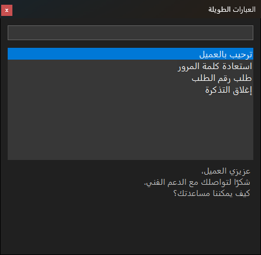
قائمة العبارات الطويلة، مع البحث ومعاينة الرد المختار.
يُدرج الرد عبر الحافظة، ثم يعيد إتمام إلى الحافظة ما كان فيها، ولا يظهر الرد في سجل الحافظة.
لفريق الدعم الفني
صدّر الردود المعتمدة إلى ملف نصي، واستوردها على أجهزة الزملاء، فيرسل الجميع الصيغة نفسها. الاستيراد يضيف إلى ما عند كل واحد ولا يحذف منه.
٨. قائمة الأيقونة
انقر أيقونة إتمام بجانب الساعة بالزر الأيسر أو الأيمن:
إيقاف إتمام
إيقاف مؤقت لساعة
إيقاف إتمام في Notepad.exe
الإعدادات
دليل الاستخدام
حول
خروج
إيقاف إتمام / تشغيل إتمام: يوقف الاقتراحات ويعيدها، ويتذكر اختيارك بعد إعادة التشغيل. والاختصار نفسه: اضغط Ctrl + Alt ثم أفلتهما.
إيقاف مؤقت لساعة: يعود إتمام وحده بعد ساعة، أو اختر «استئناف الآن».
إيقاف إتمام في …: باسم آخر برنامج كتبت فيه، فيُضاف إلى التطبيقات المستثناة بعد تأكيد.
الإعدادات ودليل الاستخدام وحول.
خروج: يُغلق إتمام تمامًا حتى تشغّله من قائمة «ابدأ» أو تسجّل الدخول مرة أخرى.
تظهر إشعارات صغيرة عند الإيقاف والتشغيل (يمكن إطفاؤها)، وإشعار حين يتوفر تحديث في المتجر.
٩. الإعدادات: عام
افتح الإعدادات من قائمة الأيقونة. على اليمين صفحات الإعدادات، وكل تغيير يُطبَّق فورًا.
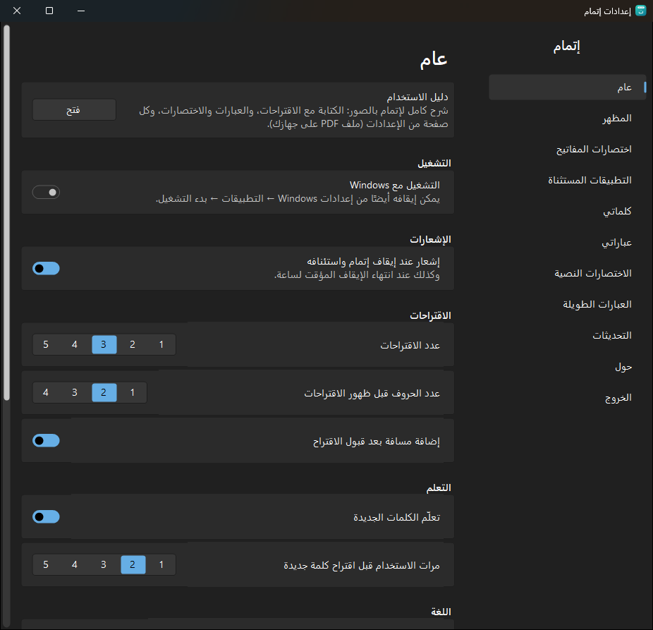
دليل الاستخدام: يفتح هذا الدليل.
التشغيل مع Windows، وإشعار عند إيقاف إتمام واستئنافه.
الاقتراحات: عددها في الشريط (1 إلى 5)، وعدد الحروف قبل ظهورها، وإضافة مسافة بعد القبول.
التعلم: تعلّم الكلمات الجديدة أو إيقافه، وعدد مرات الاستعمال قبل اقتراح كلمة جديدة.
اللغة: لغة الواجهة، العربية أو الإنجليزية.
عام: القاموس والنسخ والإحصاءات
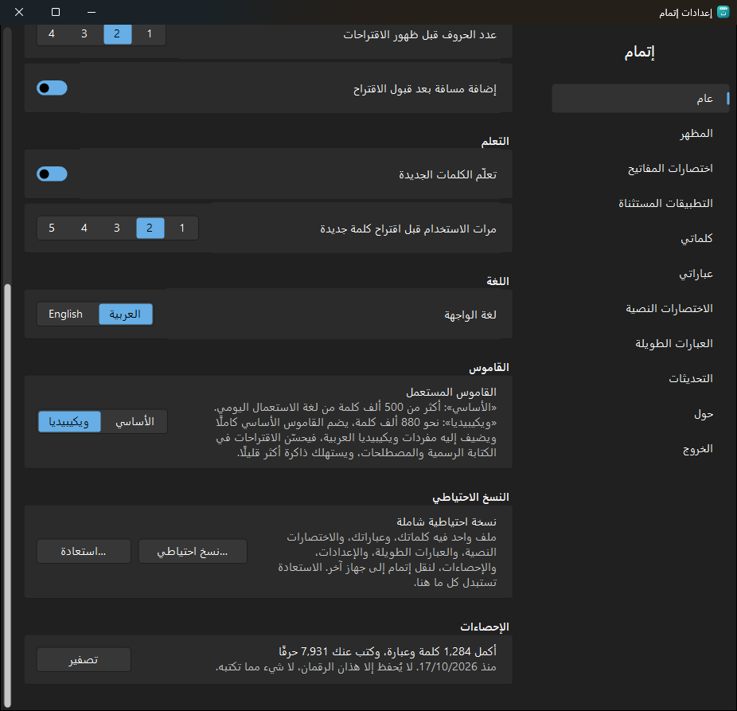
القاموس المستعمل: «ويكيبيديا» (الافتراضي) نحو 880 ألف كلمة، يضم القاموس الأساسي ويضيف إليه مفردات ويكيبيديا للكتابة الرسمية والمصطلحات. و«الأساسي» أكثر من 500 ألف كلمة ويستهلك ذاكرة أقل.
نسخة احتياطية شاملة: ملف واحد (.itmam) فيه كلماتك وعباراتك واختصاراتك وعباراتك الطويلة وإعداداتك وإحصاءاتك، لنقل إتمام إلى جهاز آخر. و«استعادة» تستبدل كل ما على هذا الجهاز بما في الملف، بعد تأكيد.
الإحصاءات: كم كلمة وعبارة أكمل إتمام، وكم حرفًا كتب عنك. لا يُحفظ إلا هذان الرقمان.
١٠. المظهر
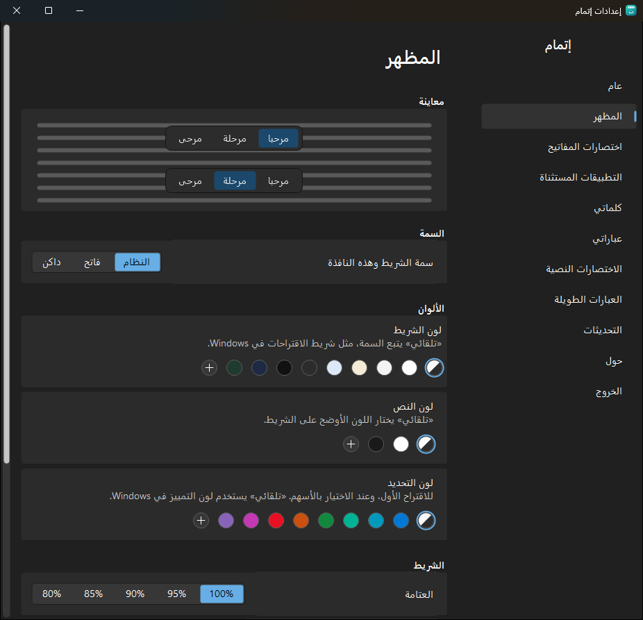
السمة: النظام، أو فاتح، أو داكن، للشريط ونافذة الإعدادات.
الألوان: لون الشريط، ولون التحديد، ولون النص. و«تلقائي» يختار اللون الأوضح، وتنبيه يظهر إذا صعبت القراءة.
الشريط: العتامة، وحجم النص، وتمييز الاقتراح الأول، وإظهار أرقام الاقتراحات.
معاينة حية في أعلى الصفحة، و«استعادة مظهر Windows» يعيد كل شيء إلى الافتراضي.
١١. اختصارات المفاتيح
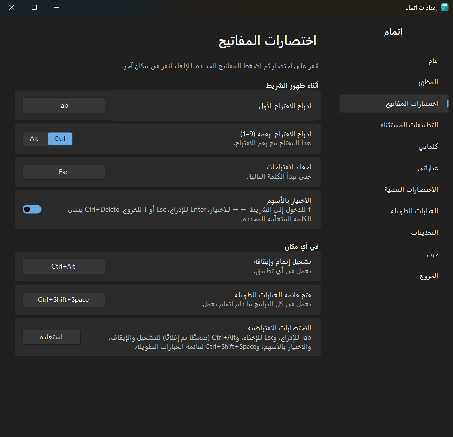
انقر على اختصار ثم اضغط المفاتيح الجديدة، وللإلغاء انقر في مكان آخر. يرفض إتمام الاختصارات التي تكتب نصًا أو تتعارض مع اختصارات Windows الشائعة، ويوضح السبب.
أثناء ظهور الشريط: إدراج الاقتراح الأول (Tab)، والإدراج برقمه (Ctrl أو Alt مع الرقم)، والإخفاء (Esc)، والاختيار بالأسهم.
في أي مكان: تشغيل إتمام وإيقافه (Ctrl + Alt)، وفتح قائمة العبارات الطويلة (Ctrl + Shift + Space).
١٢. التطبيقات المستثناة
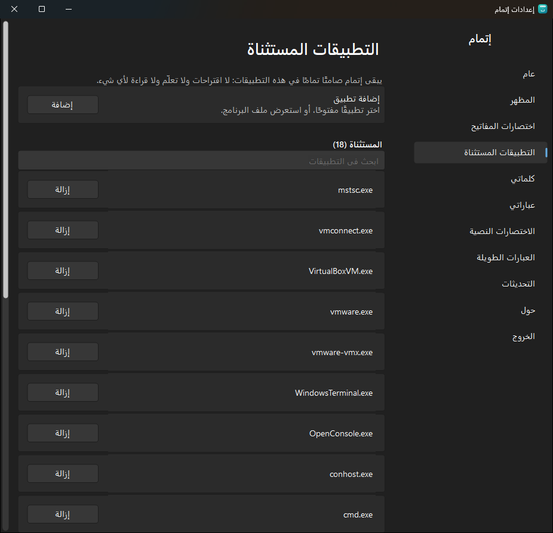
يبقى إتمام صامتًا تمامًا في هذه التطبيقات: لا اقتراحات ولا تعلّم ولا قراءة لأي شيء.
إضافة تطبيق: من التطبيقات المفتوحة، أو «استعراض…» لاختيار ملف البرنامج.
القائمة الافتراضية فيها سطح المكتب البعيد والأجهزة الافتراضية والطرفيات ومشغّلات الألعاب.
وأسرع طريقة: «إيقاف إتمام في …» من قائمة الأيقونة وأنت في البرنامج.
١٣. كلماتي
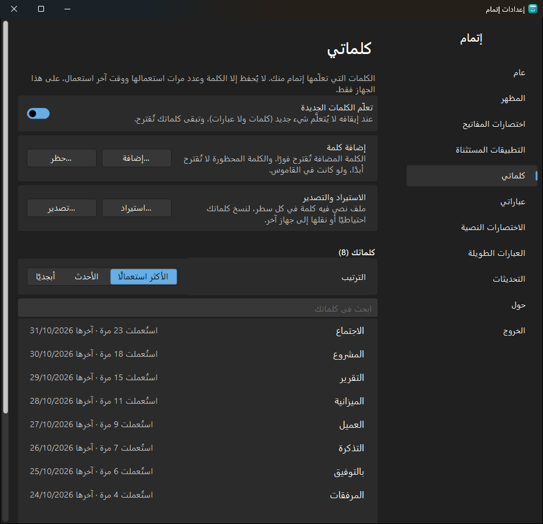
الكلمات التي تعلّمها إتمام منك. لا يُحفظ إلا الكلمة وعدد مرات استعمالها ووقت آخر استعمال، على هذا الجهاز فقط.
تعلّم الكلمات الجديدة: عند إيقافه لا يُتعلَّم شيء جديد، وتبقى كلماتك تُقترح.
إضافة: كلمة تُقترح فورًا. حظر: كلمة لا تُقترح أبدًا، ولو كانت في القاموس.
القائمة مرتبة بالأكثر استعمالًا أو الأحدث أو أبجديًا، مع البحث. انقر كلمة لتعديلها أو حظرها أو حذفها.
الاستيراد والتصدير: ملف نصي فيه كلمة في كل سطر. و«حذف كل كلماتي» لا يمكن التراجع عنه.
١٤. عباراتي والاختصارات النصية
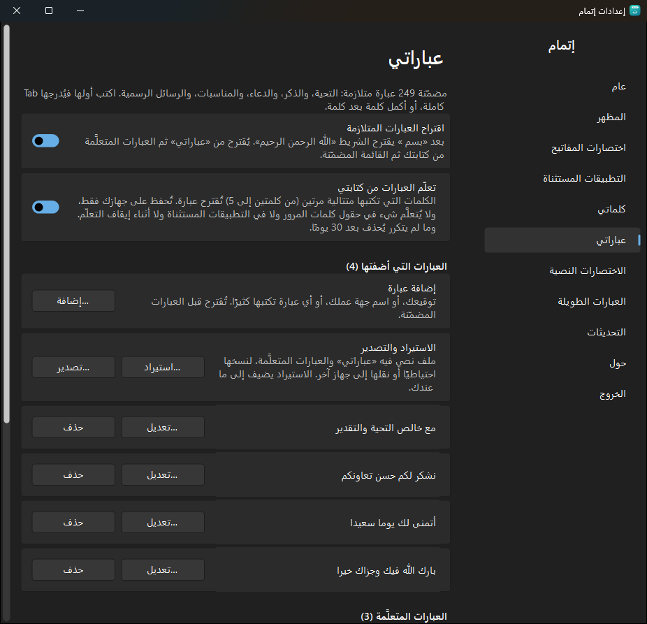
اقتراح العبارات المتلازمة وتعلّم العبارات من كتابتي: يمكن إطفاء كل منهما.
العبارات التي أضفتها: إضافة وتعديل وحذف، واستيراد وتصدير.
العبارات المتعلَّمة: تراها كلها، وتنقل ما تريد منها إلى عباراتك أو تحذفه.
العبارات المضمّنة المحذوفة: ما أخفيته من الشريط، وتستعيده من هنا.
الاختصارات النصية
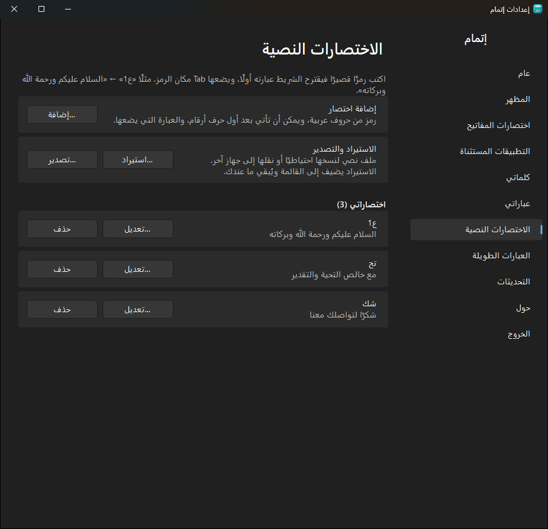
إضافة اختصار: الرمز (مثل «ع1») والعبارة التي يضعها.
عدّل أي اختصار أو احذفه من القائمة، وانقلها كلها إلى جهاز آخر بالاستيراد والتصدير.
١٥. العبارات الطويلة في الإعدادات
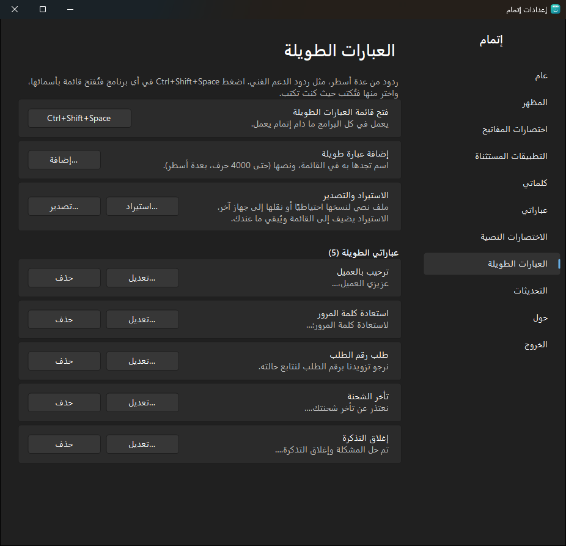
فتح قائمة العبارات الطويلة: الاختصار، ويمكن تغييره بالنقر عليه.
إضافة عبارة طويلة: الاسم (حتى 60 حرفًا) والنص (حتى 4000 حرف). في خانة النص Enter لسطر جديد وCtrl + Enter للحفظ.
تعديل وحذف، واستيراد وتصدير لمشاركتها مع زملائك.
١٦. التحديثات وحول
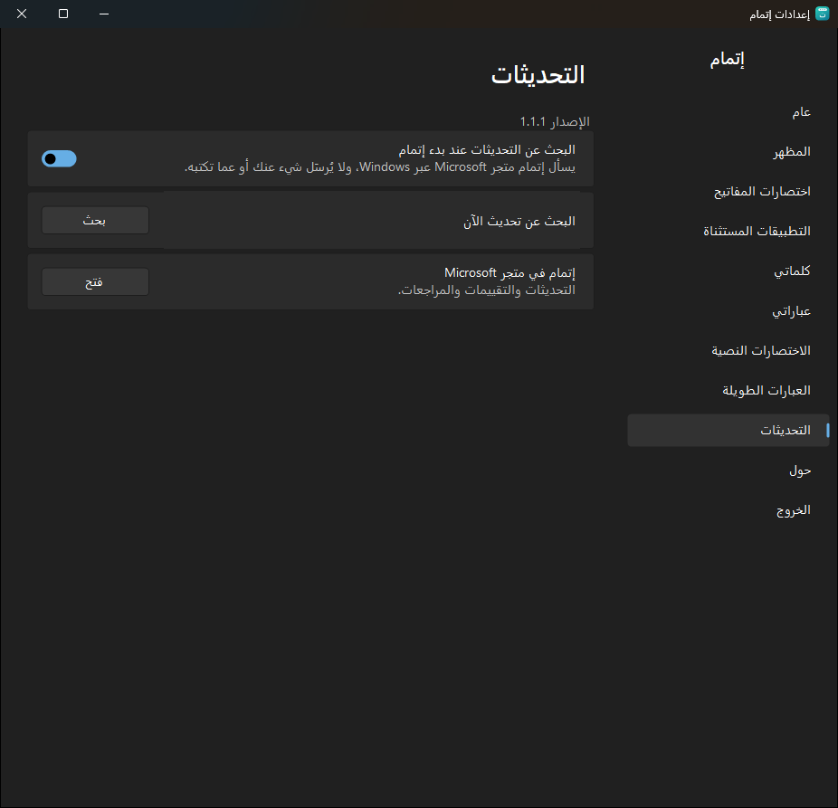
التحديثات: يسأل إتمام متجر Microsoft عند البدء هل يوجد إصدار أحدث (يمكن إطفاء ذلك)، و«بحث» يسأل الآن. التحديث نفسه يتم من المتجر.
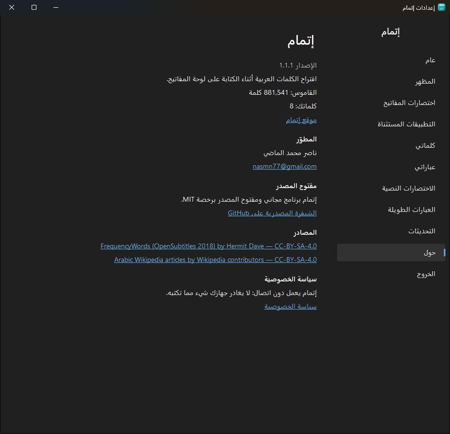
حول: الإصدار، وعدد كلمات القاموس وكلماتك، وموقع إتمام، والتواصل مع المطوّر، والشيفرة المصدرية، ومصادر القاموس، وسياسة الخصوصية.
١٧. الخصوصية
لا يتصل بالإنترنت: لا إحصاءات ولا تقارير أعطال. الاتصال الوحيد سؤال متجر Microsoft عن التحديثات عبر Windows، ويمكن إطفاؤه.
لا يحفظ ما تكتبه: يُحفظ لكل كلمة عددُ مرات استعمالها ووقت آخر استعمال فقط، والعبارات القصيرة التي تكررها مع عددها، على جهازك.
صامت حيث يجب: لا يقرأ شيئًا من حقول كلمات المرور، ولا من التطبيقات المستثناة، ولا من البرامج التي تعمل بصلاحيات المسؤول.
مفتوح المصدر: يمكن لأي أحد أن يراجع الشيفرة على GitHub.
سياسة الخصوصية كاملة: https://nasmn77.github.io/Itmam/privacy.html
١٨. حل المشكلات
لا يظهر الشريط
تأكد أن تخطيط لوحة المفاتيح عربي.
تأكد أن إتمام يعمل: أيقونته بجانب الساعة، وفي قائمتها «إيقاف إتمام» لا «تشغيل إتمام».
هل البرنامج في التطبيقات المستثناة؟ أو يعمل بصلاحيات المسؤول؟ أو بملء الشاشة؟
الشريط يظهر بعد عدد الحروف المحدد في «عام» (حرفان افتراضيًا).
الشريط في مكان غير المؤشر
بعض البرامج لا تخبر Windows بمكان المؤشر، فيضع إتمام الشريط عند حقل الكتابة أو عند الفأرة. الكتابة والإدراج يعملان مع ذلك.
كلمة غريبة تُقترح دائمًا
انقرها بالزر الأيمن ثم «حذف» إن كانت متعلَّمة، أو «حظر» حتى لا تُقترح أبدًا.
نقل إتمام إلى جهاز جديد
«عام» ← «نسخ احتياطي…» على الجهاز القديم، ثم «استعادة…» على الجديد.
البلاغات
وجدت مشكلة؟ اكتب لنا على GitHub، وتجد فيه نموذج «بلاغ عن مشكلة» جاهزًا:
 أهلًا و مرح
أهلًا و مرح